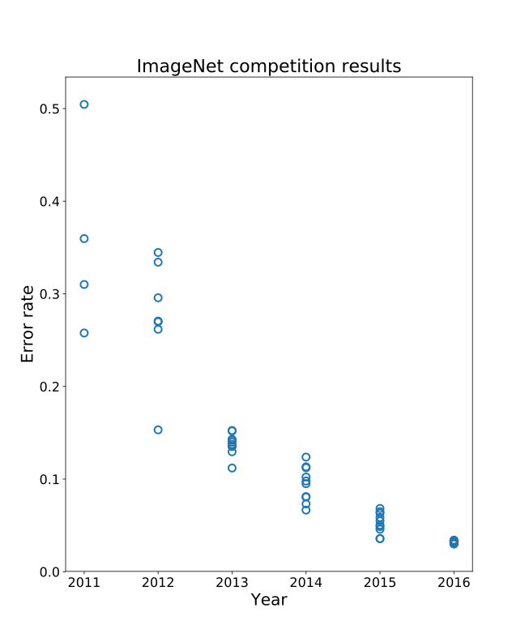

| → Space PgDn | next step / slide |
| ← PgUp | previous |
| O · Esc | slide overview |
| A | show / hide step-by-step reveals |
| T | presenter timer (R resets it) |
| F | full screen |
| Home End | first / last slide |
Each slide has its own address (e.g. #filter). Arrow keys stop working while the cursor is inside an embedded tool — click outside it or use the ‹ › buttons.
Convolutional networks, representation learning and GANs
12 November 2026
What an MLP does well, and what it assumes about the data.
Why images need a different architecture, and how a CNN works.
From engineering features to learning them: encoders and autoencoders.
GANs: from understanding images to creating them.
A handwritten digit — and, at the end, faces. A break after Part II. Each part ends with a short exercise.
A weighted sum of all its inputs plus a bias (the linear combination), passed through a non-linearity such as ReLU or sigmoid.
Forward pass → loss → backpropagation → update (Rumelhart et al., 1986).
XOR: a linear model scores ≈ 50 % (Minsky & Papert, 1969).
The hidden units learn new coordinates (h₁, h₂) in which one straight line separates the classes.
Stacked linear layers would collapse into a single linear map — no better than the model on the left.
With enough hidden units, an MLP with one hidden layer and a non-polynomial activation can approximate any continuous function on a bounded region as closely as we like (Cybenko, 1989; Hornik, 1991; Leshno et al., 1993). This says good weights exist — not that training will find them, nor how many units are needed.
Each layer is one matrix multiplication, which GPUs compute in parallel.
Every input is connected to every unit: the architecture says nothing about the structure of the data (neighbours, order, symmetries).
Because nothing is assumed, everything must be learned from examples.
Parameters = inputs × units + units: they explode for large inputs, as the next part shows.
A greyscale image has 1 channel (brightness); a colour image has 3 (red, green, blue), each a number from 0 to 255.
In the highlighted 3×3 patch, numbers barely change in smooth regions and jump at edges: patterns live in local neighbourhoods.
Even a small photo has hundreds of thousands.
The grid is flattened: its rows are laid end to end into one long list. A 28×28 digit becomes 784 numbers, and pixels that were neighbours above and below end up 28 positions apart.
One dense layer of 1,000 units on a 224×224 colour photo has ≈ 150 million weights. Fitting them needs an enormous amount of training data — otherwise the network memorises (overfits) — plus lots of memory and compute.
64 filters of 3×3×3 = 1,792 parameters, whatever the image size (next slides).
Each unit looks only at a small neighbourhood: far fewer connections.
The same few weights are reused at every position: far fewer parameters, and a pattern is found wherever it occurs.
Each output is computed independently of the others, so all positions can be computed at once on a GPU.
Right for images. Wrong for a spreadsheet, where neighbouring columns mean nothing.
To keep the picture simple, the “image” here is a single row of 8 pixels.
Slide a small kernel over the image; at each position multiply it with the patch underneath and add up. The 3×3 kernel is just 9 numbers.
The output shows where the pattern is: orange = a match, blue = the opposite pattern.
Shift the digit and the feature map shifts with it.
A filter spans all input channels: on an RGB image it is 3×3×3 = 27 weights, plus one bias.
Each filter detects a different pattern and produces its own feature map; together they are the layer’s output.
F · (k·k·Cin + 1) — independent of the image size. Example: 8 filters on an RGB image: 8 × 28 = 224.
The numbers in the filters are learned by backpropagation (first-layer filters of trained networks look like edge and colour detectors).
The output of one layer is the input of the next. A unit in layer 2 depends on a small patch of layer 1, and each of those depends on a patch of the image.
The region of the image a unit depends on. It grows with depth: stacking more layers widens the view, even though every filter stays small.
After each convolution we apply a non-linearity (ReLU). Without it, a stack of filters would collapse into one linear filter — the same reason as in the MLP.
Each feature map says where one structure occurs. Small receptive fields can only see edges and colour; larger ones can combine them into textures, parts and objects (Zeiler & Fergus, 2014; Olah et al., 2017).
No one tells the network to find edges or eyes: these structures emerge because they help the task.
Input: a 28×28 greyscale digit. Work these out; then check.
Each 2×2 window is replaced by its maximum (max pooling) or its average (mean pooling): half the height and width, no parameters.
Move the digit by a pixel: the pooled map stays more similar to the original than the feature map does, because a strong response usually stays inside its window. The stability is partial, not perfect.
Pooling can also be done across feature maps (e.g. the maximum over several filters) to become insensitive to other changes.
Convolution (+ ReLU) and pooling layers turn the image into feature maps.
Flatten + dense layers (+ softmax) turn the final feature maps into class probabilities: the MLP of Part I.
Only convolutional and dense layers have parameters; all are trained together by backpropagation.
Fewer numbers means less computation and a much smaller dense layer: 400 inputs here instead of 26×26×8 = 5,408 without any downsampling. It also widens the receptive field.
A convolution with stride 2 moves the filter two pixels at a time, also halving the map — and the downsampling is then learned rather than fixed.
80 + 1,168 + 4,010 — versus 795,010 for the dense 784 → 1000 → 10 network of the MNIST exercise (LeNet-5 style; LeCun et al., 1998).
During training, randomly switch off some units. The network cannot rely on any single unit, which reduces overfitting (Srivastava et al., 2014).
Normalise the values flowing through the network, batch by batch: faster and more stable training (Ioffe & Szegedy, 2015).
Create extra training images by randomly shifting, flipping or cropping them, so the network sees more variety.

The lone point far below all others is AlexNet: 15.3 % top-5 error vs. 26.2 % for the runner-up (Krizhevsky et al., 2012).
8 → 22 → 152 layers; by 2015 residual networks reached 3.6 % (He et al., 2016).
Satellite imagery to estimate poverty (Jean et al., 2016); audits showing face-analysis systems err far more on darker-skinned women (Buolamwini & Gebru, 2018).
Input 64×64×3 → conv → conv → pool → conv → conv → pool → softmax over 10 classes.
Click a conv_1_1 neuron: 3 kernels (one per colour channel) of 3×3; the layer has 10 × 3 × 9 + 10 = 280 parameters.
Early maps are fine; late maps are coarser and more class-specific.
Use ⤢ Full width (top right) — the tool needs room.
Next: representation learning, then GANs.
For decades, computer-vision experts designed the features by hand (edges, SIFT, HOG; Dalal & Triggs, 2005), and only the classifier was trained.
A CNN learns its filters from the data, together with the classifier.
This is representation learning: the network learns, from data, how to represent its input in a way that makes the task easy (Bengio et al., 2013).
The encoder turns each input into a latent vector: a short list of numbers, a point in a representation space.
It keeps the information we need, and similar inputs end up close together.
The convolutional layers of a classifier compute such a representation. How can we learn one without labels? Next slide.
Encoder (conv layers) → latent vector → dense layer + softmax → class. The loss compares the prediction with the label.
Replace the dense head with a decoder that rebuilds the image (using up-sampling layers). The loss compares the output with the input itself: no labels needed.
The latent vector has far fewer numbers than the image, so the network must keep only what matters to rebuild it.
The error falls from the “average digit” baseline as the network learns.
Digits cluster in the latent space although labels were never used (colours are for display only).
Smaller latent vector: blurrier rebuilds. Larger: sharper, but less compressed.
Finds the best linear projection onto k directions and rebuilds from it.
An autoencoder with linear layers and squared error learns the same subspace as PCA (Baldi & Hornik, 1989).
With non-linear layers the autoencoder can follow curved structure that a straight projection cannot (Hinton & Salakhutdinov, 2006).
Learn a vector that is enough to rebuild the input.
Learn a vector that is enough to predict something about the input.
word2vec places words with similar meanings close together (Mikolov et al., 2013).
Embeddings trained on 100 years of text quantify changing gender and ethnic stereotypes (Garg et al., 2018), map the meaning of “class” (Kozlowski et al., 2019) and place parties on ideological scales (Rheault & Cochrane, 2020).
FaceNet maps each face to a 128-number vector: the same person lands close by, different people far apart (Schroff et al., 2015).
YouTube retrieves videos by proximity of embeddings (Covington et al., 2016); node2vec embeds the nodes of a network (Grover & Leskovec, 2016).
A 28×28 digit (784 numbers) is encoded into a latent vector.
| Task | Direction | Question |
|---|---|---|
| Discriminate | x → label | “Which class is this x?” |
| Represent | x → z | “What is a good summary of x?” (Part III) |
| Generate | random z → new x | “Make a new x that looks like the data.” |
G has the shape of a decoder: it maps a random vector to an image. D is a classifier. In DCGAN both are CNNs (Radford et al., 2016).
Take a batch of real images and a batch of noise; G turns the noise into fakes.
Label real = 1, fake = 0; improve D’s classification.
Send fakes through D; update G so that D outputs “real”.
Until the fakes look like the data.
D tries to maximise V, G to minimise it. At the theoretical optimum G matches the data and D can only guess (D(x) = ½).
If D wins too easily, G gets no useful feedback; G may also learn to produce only a few kinds of samples (“mode collapse”).
2-D toy data. Green dots = real samples, purple dots = G’s fakes.
Background colour = D’s verdict: green “looks real”, purple “looks fake”.
Pink lines = how each fake should move to look more real.
To start from scratch: untick “Use pre-trained model”, press ↺, then ▶. Use ⤢ Full width (top right).
Each pair has one real photograph and one face generated by a GAN (StyleGAN). Click the real one. Keep your score over 10 rounds.
The first GAN samples (2014) were small and blurry (Goodfellow et al., 2014); StyleGAN faces are hard to tell from photographs (Karras et al., 2019).
If it looks cramped, use ⤢ Full width or open it in its own tab.
We need no photo of the same scene as a horse and as a zebra: only a set of horse photos and a set of zebra photos.
G translates horse → zebra, F translates back. A discriminator checks that the translation looks like a real zebra.
Translating there and back must return the original image — so the content is kept and only the style changes. Same idea: summer ↔ winter, photo ↔ painting.
Linear combination + non-linearity. Universal, but assumes nothing and needs lots of data.
Local filters with shared weights, stacked, with pooling: far fewer parameters, built for images.
An encoder maps data to a latent vector; autoencoders learn it by reconstruction, without labels.
Generator vs. discriminator: learn the data distribution well enough to create new data.
Cybenko, G. (1989). Approximation by superpositions of a sigmoidal function. Mathematics of Control, Signals and Systems, 2, 303–314.
Goodfellow, I., Bengio, Y., & Courville, A. (2016). Deep Learning. MIT Press. deeplearningbook.org
Hornik, K. (1991). Approximation capabilities of multilayer feedforward networks. Neural Networks, 4(2), 251–257.
Leshno, M., Lin, V. Y., Pinkus, A., & Schocken, S. (1993). Multilayer feedforward networks with a nonpolynomial activation function can approximate any function. Neural Networks, 6(6), 861–867.
Minsky, M., & Papert, S. (1969). Perceptrons. MIT Press.
Rumelhart, D. E., Hinton, G. E., & Williams, R. J. (1986). Learning representations by back-propagating errors. Nature, 323, 533–536.
Beery, S., Isola, P., & Bernstein, J. (2024). Lecture 4: Architectures for grids. MIT 6.7960 Deep Learning, Fall 2024. MIT OpenCourseWare.
Fukushima, K. (1980). Neocognitron. Biological Cybernetics, 36, 193–202.
Hubel, D. H., & Wiesel, T. N. (1962). Receptive fields, binocular interaction and functional architecture in the cat’s visual cortex. J. Physiology, 160, 106–154.
LeCun, Y., et al. (1989). Backpropagation applied to handwritten zip code recognition. Neural Computation, 1(4), 541–551.
LeCun, Y., Bottou, L., Bengio, Y., & Haffner, P. (1998). Gradient-based learning applied to document recognition. Proc. IEEE, 86(11), 2278–2324.
Krizhevsky, A., Sutskever, I., & Hinton, G. E. (2012). ImageNet classification with deep convolutional neural networks. NeurIPS, 25.
Luo, W., Li, Y., Urtasun, R., & Zemel, R. (2016). Understanding the effective receptive field in deep convolutional neural networks. NeurIPS, 29.
Olah, C., Mordvintsev, A., & Schubert, L. (2017). Feature visualization. Distill.
Zeiler, M. D., & Fergus, R. (2014). Visualizing and understanding convolutional networks. ECCV.
Srivastava, N., Hinton, G., Krizhevsky, A., Sutskever, I., & Salakhutdinov, R. (2014). Dropout: A simple way to prevent neural networks from overfitting. JMLR, 15, 1929–1958.
Ioffe, S., & Szegedy, C. (2015). Batch normalization: Accelerating deep network training by reducing internal covariate shift. ICML.
Gkrusze (2018). ImageNet error rate history (just systems). Wikimedia Commons, CC BY-SA 4.0.
Russakovsky, O., et al. (2015). ImageNet Large Scale Visual Recognition Challenge. IJCV, 115, 211–252.
He, K., Zhang, X., Ren, S., & Sun, J. (2016). Deep residual learning for image recognition. CVPR.
Jean, N., et al. (2016). Combining satellite imagery and machine learning to predict poverty. Science, 353(6301), 790–794.
Buolamwini, J., & Gebru, T. (2018). Gender shades. PMLR, 81, 77–91.
Wang, Z. J., et al. (2021). CNN Explainer: Learning convolutional neural networks with interactive visualization. IEEE TVCG, 27(2).
Bengio, Y., Courville, A., & Vincent, P. (2013). Representation learning: A review and new perspectives. IEEE TPAMI, 35(8), 1798–1828.
Dalal, N., & Triggs, B. (2005). Histograms of oriented gradients for human detection. CVPR.
Baldi, P., & Hornik, K. (1989). Neural networks and principal component analysis: Learning from examples without local minima. Neural Networks, 2(1), 53–58.
Hinton, G. E., & Salakhutdinov, R. R. (2006). Reducing the dimensionality of data with neural networks. Science, 313, 504–507.
Vincent, P., Larochelle, H., Bengio, Y., & Manzagol, P.-A. (2008). Extracting and composing robust features with denoising autoencoders. ICML.
Pathak, D., Krähenbühl, P., Donahue, J., Darrell, T., & Efros, A. A. (2016). Context encoders: Feature learning by inpainting. CVPR.
Mikolov, T., Chen, K., Corrado, G., & Dean, J. (2013a). Efficient estimation of word representations in vector space. arXiv:1301.3781. · Mikolov, T., Yih, W., & Zweig, G. (2013b). Linguistic regularities in continuous space word representations. NAACL.
Garg, N., Schiebinger, L., Jurafsky, D., & Zou, J. (2018). Word embeddings quantify 100 years of gender and ethnic stereotypes. PNAS, 115(16), E3635–E3644.
Kozlowski, A. C., Taddy, M., & Evans, J. A. (2019). The geometry of culture: Analyzing the meanings of class through word embeddings. American Sociological Review, 84(5), 905–949.
Rheault, L., & Cochrane, C. (2020). Word embeddings for the analysis of ideological placement in parliamentary corpora. Political Analysis, 28(1), 112–133.
Schroff, F., Kalenichenko, D., & Philbin, J. (2015). FaceNet: A unified embedding for face recognition and clustering. CVPR.
Covington, P., Adams, J., & Sargin, E. (2016). Deep neural networks for YouTube recommendations. RecSys.
Grover, A., & Leskovec, J. (2016). node2vec: Scalable feature learning for networks. KDD.
Ng, A. Y., & Jordan, M. I. (2001). On discriminative vs. generative classifiers. NeurIPS, 14.
Goodfellow, I., et al. (2014). Generative adversarial nets. NeurIPS, 27. · Goodfellow, I. (2016). NIPS 2016 tutorial: GANs. arXiv:1701.00160.
Radford, A., Metz, L., & Chintala, S. (2016). Unsupervised representation learning with deep convolutional GANs. ICLR.
Salimans, T., et al. (2016). Improved techniques for training GANs. NeurIPS, 29.
Karras, T., Laine, S., & Aila, T. (2019). A style-based generator architecture for GANs. CVPR.
Zhu, J.-Y., Park, T., Isola, P., & Efros, A. A. (2017). Unpaired image-to-image translation using cycle-consistent adversarial networks. ICCV.
Kahng, M., et al. (2019). GAN Lab. IEEE TVCG, 25(1).
Bergstrom, C., & West, J. Which Face Is Real? University of Washington. whichfaceisreal.com
Powell, V. Image kernels explained visually. setosa.io · Zhang, A., Lipton, Z. C., Li, M., & Smola, A. J. Dive into Deep Learning. d2l.ai · CS231n ConvNet notes
Weng, L. (2018). From autoencoder to Beta-VAE. lilianweng.github.io
Interactive: CNN Explainer · GAN Lab · TensorFlow Playground · Feature visualization · more tools
Data: Alpaydin, E., & Kaynak, C. Optical Recognition of Handwritten Digits (UCI Machine Learning Repository; 8×8 version distributed with scikit-learn).